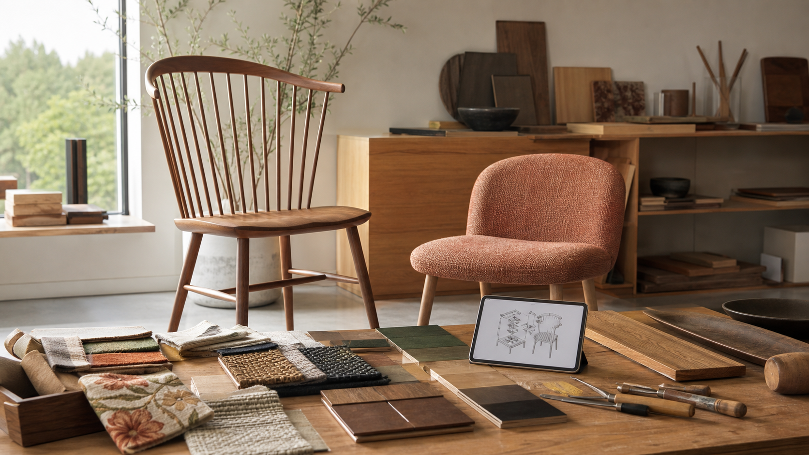

2026.07.13 가구·인테리어·목공 일일 트렌드

오늘의 흐름은 "오래된 형식의 재해석"과 "조합 능력"입니다. 스핀들 체어와 빈티지 패브릭은 손맛과 구조를 다시 전면에 세우고, 비매칭 가구와 7월 홈웨어 큐레이션은 세트 판매보다 조합 제안이 중요해졌다는 신호를 줍니다. 동시에 실외 가구 소재와 AI 조립 연구는 작은 공방도 소재 설명, 사용 환경, 조립 공정 데이터를 더 촘촘히 준비해야 한다는 방향을 보여줍니다.
1. 스핀들 체어가 다시 주목받으며 '보이는 목구조'가 강해진다
Southern Living은 수백 년 된 스핀들 체어 형식이 2026년 인테리어에서 다시 자주 보인다고 전했습니다. 등받이를 이루는 가느다란 목봉, 윈저 체어로 이어지는 전통, 수공예적 인상, 내구성, 주방과 다이닝룸 양쪽에 어울리는 범용성이 핵심입니다. 빠르게 바꾸는 가구보다 오래 쓰는 구조적 가구를 찾는 분위기와도 맞물립니다.
왜 중요할까. 원목가구 공방에는 장부와 선반, 등받이 봉, 곡선 좌판 같은 구조 자체를 디자인 언어로 보여줄 기회입니다. 목간이 의자나 벤치 라인을 기획한다면 장식보다 부재의 굵기, 반복 간격, 손으로 잡히는 촉감, 수리 가능한 접합 방식을 전면에 내세울 수 있습니다.
- Southern Living, 스핀들 체어 복귀 보도 · 2026.07.13
2. 같은 세트보다 '조율된 비매칭'이 더 현대적인 방으로 읽힌다
The Spruce는 매칭 가구 세트가 현대 인테리어를 평면적이고 개성 없게 보이게 할 수 있으며, 대신 형태·소재·시대가 다른 가구를 조율하는 방식이 선호된다고 정리했습니다. 기존 세트를 버리기보다 일부를 다른 방으로 옮기거나, 다른 질감의 의자·조명·텍스타일을 더해 층위를 만드는 제안도 함께 다뤘습니다.
왜 중요할까. 목간은 식탁+의자 세트만 팔기보다 "오크 식탁 + 다른 수종 벤치 + 패브릭 체어"처럼 조합형 견적을 보여줄 필요가 있습니다. 고객에게 같은 수종, 같은 다리, 같은 색상만 권하면 안정적이지만, 고급스러운 주거 이미지는 오히려 비율과 질감의 차이를 잘 조율할 때 생깁니다.
- The Spruce, 매칭 가구 세트와 비매칭 스타일 분석 · 2026.07.09
3. 대중 리테일의 실외 가구가 소재 설명을 전면에 내세운다
Southern Living은 Walmart의 7월 실외 가구 신상품을 다루며 PE 위커, 아연도금 스틸 프레임, 티크 데이베드, 알루미늄 다이닝 테이블, 커버와 방수 쿠션 같은 소재·관리 요소를 함께 소개했습니다. 단순히 "예쁜 야외 가구"가 아니라 녹, 습기, 보관, 커버, 변형 저항까지 구매 이유로 설명되는 흐름입니다.
왜 중요할까. 야외용 원목이나 반야외 가구 문의가 들어올 때 공방은 수종만 말하면 부족합니다. 티크, 방킬라이, 오일 마감, 배수 틈, 금속 하부 프레임, 방석 보관, 겨울철 커버링을 한 장의 관리 카드로 묶어야 가격 차이를 납득시킬 수 있습니다.
- Southern Living, Walmart 실외 가구 신상품 보도 · 2026.07.09
- Walmart Patio & Garden 공식 카테고리 · 2026.07.13 확인
4. 7월 홈웨어 신상품은 큰 가구보다 색, 촉감, 소품 레이어를 강조한다
Livingetc는 7월 신상품 큐레이션에서 노골적인 휴양지 소품보다 채도 있는 색, 장난스러운 모티프, 바람이 통하는 듯한 소재, 러그·쿠션·조명·바스켓 등 작은 물건으로 계절감을 완성하는 흐름을 짚었습니다. 대형 가구 구매보다 실내외 모임을 마무리하는 소품의 역할이 커졌다는 해석입니다.
왜 중요할까. 목간의 원목 가구도 완성 사진에서 상판만 보여주기보다 러너, 도자기, 조명, 직물, 소형 목제품을 함께 배치해야 고객이 생활 장면을 상상합니다. 공방 상품기획 관점에서는 도마, 트레이, 작은 스툴, 촛대, 책꽂이처럼 대형 가구와 함께 팔 수 있는 저가 진입 상품을 실험하기 좋습니다.
- Livingetc, 2026년 7월 신상품 홈웨어 큐레이션 · 2026.07.10
5. AI 가구 조립 연구는 공방의 공정 기록 방식까지 바꿀 수 있다
arXiv에 7월 1일 제출된 FurnitureVLA 연구는 실제 크기의 가구 조립을 양팔 로봇과 비전-언어-행동 모델로 다루며, 최대 7개 하위 작업과 1550개 제어 단계에 이르는 긴 조립 과정을 학습 대상으로 삼았습니다. 연구는 진행률 신호를 함께 예측해 자동으로 다음 하위 작업으로 넘어가도록 하고, 시뮬레이션 성공률을 높였다고 보고했습니다.
왜 중요할까. 당장 공방에 로봇을 들이는 이야기가 아닙니다. 더 중요한 것은 조립 순서, 기준면, 클램핑 위치, 볼트 체결 순서, 실패 지점을 영상과 체크리스트로 남기는 습관입니다. 이 데이터가 쌓이면 교육, 외주, CNC 후가공, 조립 설명서, 향후 자동화 검토의 기초가 됩니다.
- arXiv, FurnitureVLA 논문 페이지 · 2026.07.01 제출
오늘의 실무 인사이트
- 의자와 벤치는 구조 사진을 상품 사진처럼 찍는다. 등받이 봉 간격, 좌판 곡면, 하부 보강대, 접합부를 정면·측면·디테일 컷으로 남기면 스핀들형·짜맞춤형 가구의 설득력이 올라갑니다.
- 세트 견적서 옆에 비매칭 조합안을 붙인다. 같은 가격대라도 의자 2종, 벤치 1종, 다른 패브릭을 섞은 안을 제시하면 고객이 "전시장 세트"가 아니라 "내 집에 맞춘 구성"으로 받아들입니다.
- 야외·반야외 제품에는 관리 카드를 기본 제공한다. 수종, 금속, 방석, 커버, 우천 후 건조, 오일 재도포 주기를 한 장으로 정리하면 A/S 문의를 줄이고 프리미엄 가격의 근거가 됩니다.
- 공정 데이터를 짧은 영상과 체크리스트로 축적한다. 조립 순서와 실패 포인트를 기록해두면 직원 교육, 공모전 제작 기록, CNC 파일 개선, 향후 자동화 검토에 모두 재사용할 수 있습니다.